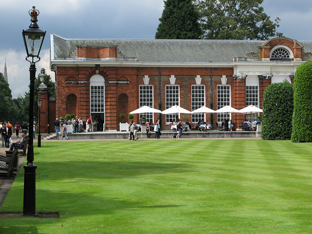
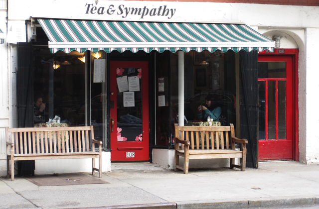
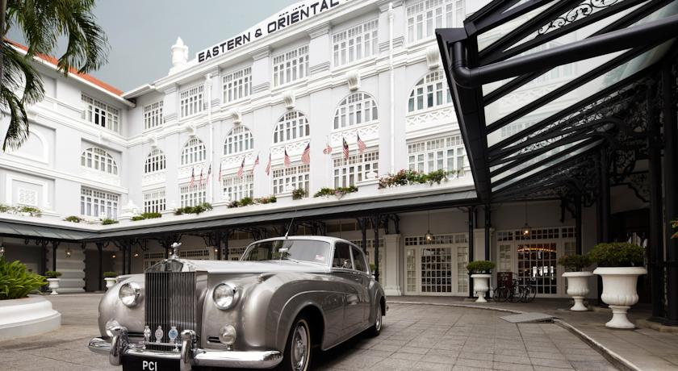
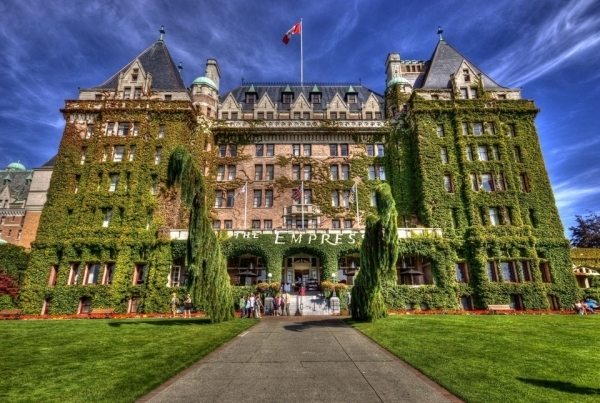
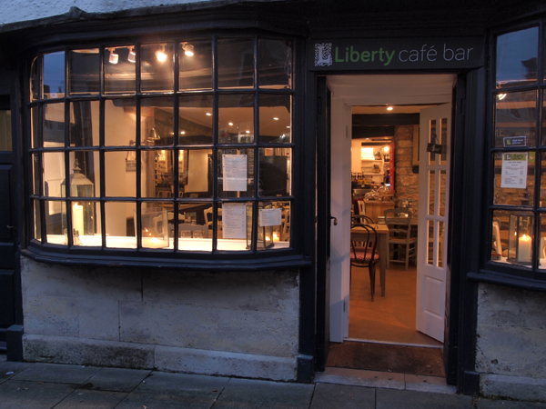

11:50 am
22 june, 2016

Dating back to the mid-1800s, the tradition of afternoon tea was first introduced by the aristocracy of England and its colonies. Since then, the formal meal has infiltrated the world’s most elite hotels, historic museums, and kitschy patisseries, allowing the masses to enjoy decadent three-tiered servings of finger sandwiches, tiny cakes, and strawberries with Devonshire cream. As an alternative to holiday cocktails, warm-up with afternoon tea at one of our recommended locales, from traditional luxury hotels to homey, rustic cafes.
THE ORANGERY AT KENSINGTON GARDENS
Where: London, England
 Built in 1704, The Orangery, or “greenhouse” in the gardens at Kensington Palace is a light-filled venue with floor-to-ceiling windows and white-washed stone floors, the ideal setting for traditional English tea. Guests can choose from the English Orangery Afternoon Tea or the Royal Tea—which comes accompanied by a glass of Laurent-Perrier Brut or Rosé Spumante. We recommend a stroll through the gardens to walk off the food coma and Champagne buzz.TEA & SYMPATHY
Where: New York City, New York
 Tucked into a tiny shop in Greenwich Village, Tea & Sympathy is owned by English husband and wife duo Sean Kavanagh-Dowsett and Nicky Perry. The couple recreates the quintessential English tea market with items that are hard to find stateside—think Heinz baked beans and Cadbury chocolate. Next door, guests can enjoy a homemade afternoon tea of rhubarb crumble, custard, and orange scones, served on shabby-chic, mismatched floral china.THE GETTY VILLA
Where: Malibu, California
Situated atop a hill in Malibu, The Getty Villa museum recreates an ancient Roman country house and gardens, and the afternoon tea is consistent with the Mediterranean theme. Aptly named “Tea by the Sea,” the serving consists of Italian-inspired dishes like scones with mascarpone and honey, duck-and-apple chutney panini, mortadella-buttermilk biscuits, and pesto crostini. Guests dine while overlooking the authentically recreated Roman gardens, with Pacific Ocean waves roaring in the distance.EASTERN & ORIENTAL HOTEL
Where: Penang, Malaysia
 Known as “The E&O” to generations of travellers who have stayed there, The Eastern & Oriental Hotel historically represents Malaysia’s British Colonial era and is situated directly on the coast of the Malacca Strait. The hotel’s afternoon tea is traditionally English, featuring blue and white porcelain tea sets and crisp white tablecloths. Though the sweets shine, with intricately decorated petit fours, raspberry-topped macaroons, and chocolate-covered strawberries, the hallmark of the meal is the old-world service and tradition of a bygone era.THE GRAND EMPRESS HOTEL
Where: Victoria, Canada
 Boasting its very own blend of tea with components from Assam, Kenya, South India, and China, The Fairmont Grand Empress Hotel in Victoria, British Columbia, is undoubtedly one of the world’s most luxurious afternoon tea experiences. The dining room is richly outfitted with hand-carved tables, chintz fabrics, antique tapestries, and wingback chairs, and guests can gaze at the city’s bustling Inner Harbor as they sip Kir Royales and sample rose petal-accented shortbread.CAFE LIBERTY
Where: London, England
 Easily the most fashionable pick on our list, Liberty of London is England’s retail gem, and the store’s restaurant, Café Liberty is a chic, yet casual extension of the brand. Take a break from browsing the world’s trendiest, avant-garde fashion and Liberty’s iconic fabrics with the Perrier Jouët Tea, or keep it simple with the Cream Tea—a smaller selection of scones, jam, and Cornish clotted cream.Author: Bufle